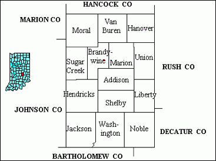
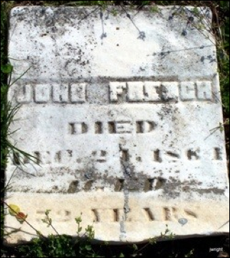
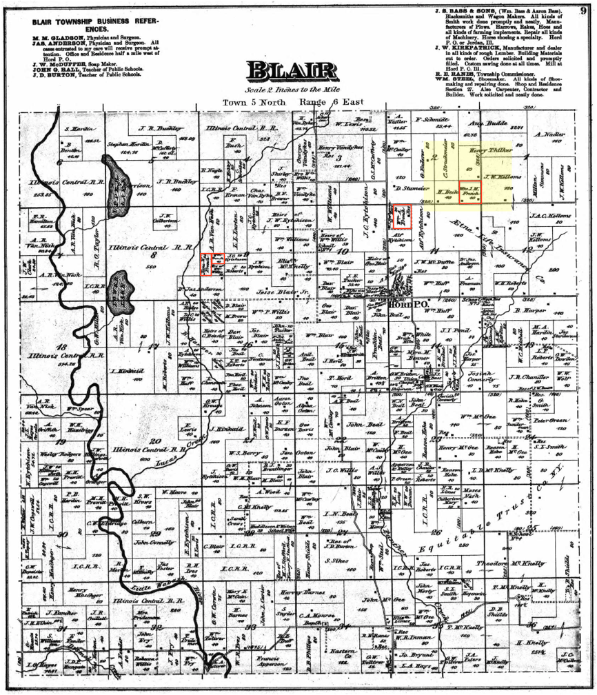
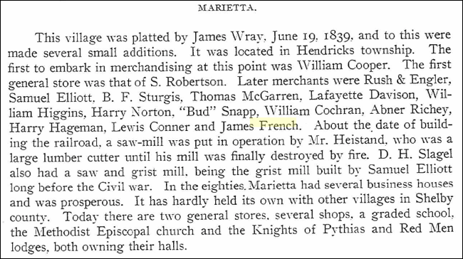

French Family Association
The Official Website of the Surname French
Circus Day in Shelbyville, Indiana, on 6 Sep 1907
Chart #187, John French, 1812
Warren Co., OH and Hendricks, Shelby Co., IN
This chart updated by Mara French on 3/21/15. Numbers in brackets [ ] show sources and refer to the bibliography at the end of this chart. An asterisk (*) shows continuation of that line. This research is compiled to the best of my ability and offered here free of charge; I take no responsibility for errors. Send any corrections or additions to marafrench@mindspring.com. Although this is not my line, I make additions to it, and you will be notified when your data or someone elseÕs data is added. Revisions: 2009, 2010, 2014, 2015.
Links
A descendant from this French family took the DNA
test, Kit
Number 87792, in DNA Test Group 1. See Ref.
[49] for more details.
Look at the Outline below for your ancestor and then click the generation here:
For FFA Charts #187 and #164. Both of these French families have ancestors in Clay County, Illinois, PLUS Posey County, Indiana, and we would like to tie them together. If you can help, please email marafrench@mindspring.com. Be careful to distinguish between Posey County, Indiana, and Posey, Clay County, Indiana.
Outline
1.1 John French, b. 1812 in Warren County, OH, d. 24 Dec 1864 in Hendricks, Shelby Co., IN, m1. Lydia Margaret Spurling, m2. Jane Matilda Williams.
2.1 Tunis (aka Lewis) J. French, b. 26 Jun 1838 in Florence, Switzerland Co., IN, or in Shelbyville, Shelby, IN, or in Jackson, Shelby, IN, d. 1 Jun 1921 in Shelby, Hendricks Co., IN, m. Elizabeth Layman on 7 Aug 1860 in Shelby.
3.1 James M. French, b. 14 Nov 1862 in IN, m. Fanny B. Johnson on 27 Nov 1884 in Shelby Co., IN, he d. in 1943 in Hamilton Co., IN.
4.1 Goldie French, b. 12 Mar 1886 in Shelby Co., IN.
4.2 Floyd Edgar French, b. 9 Jul 1894 in Shelby Co., IN, d. Apr 1983 in Lebanon, Boone, IN. He m. Minnie Mae McCoy on 6 Apr 1917 in Monroe, IN.
5.1 Russell D. French, b. 9 Jan 1919 in Lebanon, Boone, IN, d. 25 Jan 2000 in Lebanon, Boone, IN, m. Lorena Beatrice Gill on 24 Dec 1939.
5.2 Wilbur French, b. 6 Aug 1925 in IN, m. Wanda Sue Spear on 25 Aug 1946. She was b. 24 Jul 1927 and d. 16 Feb 1990.
6.1 Doug French of Lebanon, Boone, IN, born after 1947.
6.2 Dennis French of Lebanon, Boone, IN, born after 1947.
5.3 James Clifton French, b. 29 May 1928 in Lebanon, Boone Co., IN, d. 30 Mar 1989 in Mechanicsburg, Boone Co., IN, m. Florence Cook on 17 Oct 1953 who was b. 1933, d. 2010.
6.3 James E. French of Lebanon, Boone, IN, born after 1954.
6.4 Diann French of Lebanon, Boone, IN, born after 1954.
6.5 Brent French of Lebanon, Boone, IN, born after 1954.
5.4 Gerald French, b. 23 Mar 1933 in IN, lived at 711 W. Washington St., Lebanon, Boone, IN in the 1940 census.
3.2 Dora Ann (Anna) French, b. 30 Jan 1868 in Marietta, Shelby Co., IN, d. 15 Oct 1948 in Las Animas, Bent Co., CO, m. James Alexander Beard.
3.3 Ida Mae French, b. 21 Dec 1871 (twin) in Marietta, Shelby Co., IN, m. Abner Connert on 2 Jan 1890 in Shelby.
3.4 Ivory Day French, b. 21 Dec 1871 (twin) in Marietta, Shelby Co., IN, d. 20 Mar 1938 in Sheridan, IN, m. Dora Alice Stainbrook on 9 Sep 1894 in Johnson, IN.
3.5 Martin Daily French, b. 2 Feb 1877 in Marietta, Shelby Co., IN, d. 10 Nov 1950 in Shelby, IN, m1. Hattie Anderson on 25 Jul 1896 in Shelby, IN, m2. Oma Zada Kinnick in Nov 1902 in Shelbyville, Shelby Co., IN.
2.2 Mary E. French, b. 1840 in Jackson, Shelby Co., IN.
2.3 James M. French, b. 21 Mar 1841 in Sharpsville, Shelby Co., IN, d. 11 Jan 1909 in Kokomo, Howard Co., IN, m. Caroline L. Doty on 29 Nov 1865 in Johnson Co., IN.
3.6 Louis A. (or Lewis A.) French, b. 20 Jan 1867/68 in Johnson Co., IN, d. in Roseburg, Douglas Co., Oregon.
3.7 Sarah Alice French, b. 17 Apr 1870 in Johnson Co., IN, m. Rutherford B. Hayes on 12 Oct 1898, d. 29 Nov 1901 at age 31.
3.8 Charles Henry French, b. 5 Mar 1872 in Cicero, Tipton Co., IN. He m. Phoebe Agnes Caylor on 17 Apr 1894 at age 21 in Howard Co., IN.
3.9 Laura Ellen French, b. 31 Dec 1873 in Cicero, Tipton Co., IN, d. 1 Apr 1958 in Payne Co., OK, m. Benjamin Franklin Markland on 27 Dec 1893 in Howard Co., IN.
3.10 Ida Adeline French, b. 8 Jun 1876 in Cicero, Tipton Co., IN, d. 13 Feb 1931 in Jefferson, Huntington Co., IN, m. Joseph Warren Saul on 18 Oct 1893.
3.11 Clara E. French, b. 15 Mar 1880 in Cicero, Tipton Co., IN, d. 15 Aug 1882 in Cicero, Tipton Co., IN, age 2.
3.12 Obra French, b. 8 Oct 1882 (twin) in Cicero, Tipton Co., IN, d. in infancy on 18 Dec 1882,
3.13 Elgin French, b. 8 Oct 1882 (twin) in Cicero, Tipton Co., IN, d. in infancy on 25 Oct 1882.
2.4 Samuel M. French, b. Nov 1844 in Jackson, Shelby Co., IN, moved to Blair, Clay Co., IL by 1880. He m. Nancy. No living heirs. He died before 1920 and she died before 1930.
2.5 Nancy E. French, b. 1846 in Jackson, Shelby Co., IN. She m. Jesse D. Robards on 11 Sep 1867 in Johnson Co., IN.
2.6 Sarah C. French, b. 1848 in Jackson, Shelby Co., IN, m. Jesse D. Robards on 11 Sep 1867 in Johnson, IN, and had 6 children.
2.7 John W. French, b. 1849 in Jackson, Shelby Co., IN.
2.8 William Allen French, b. 18 Apr 1851 in Hendricks, Shelby Co., IN, moved to Blair, Clay Co., IL by 1880. He d. 2 Mar 1907 in W. Central, Nebraska, buried at the East Lawn Cemetery in Minatare, Scotts Bluff Co., NE. He m. Hetty Jane Eytchison (or Etchison) on 20 Oct 1872 in Blair, Clay, IL.
3.14 Esther Odessa French, b. in NE, d. in infancy.
3.15 Elma Bonnie French, b. 19 Sep 1873 in NE, died the same day.
3.16 John Elkanah French, b. 5 Jun 1876 in IL, d. 10 Apr 1974 in Salt Lake City, UT, m. Anna Lowa Dickenson on 6 Nov 1898 in Scotts Bluff, NE.
4.3 Ethel Marguerite French, b. 1900 in Henry, Scotts Bluff, NE, d. 1900.
4.4 Doris Mildred French, b. 14 Nov 1902 in NE, d. 12 Oct 1997 in Yakima, Yakima County, Washington.
4.5 Elma Nadine French, b. 19 Jul 1907 in Henry, Scotts Bluff, NE, d. 30 Jan 1910 in Henry, Scotts Bluff, NE.
4.6 Warren A. French, b. 17 Aug 1911 in Shawver Place, Scotts Bluff, NE, d. 6 Apr 1974 in Yakima, Yakima County, Washington.
4.7 Dorothee Loraine French, m. Milton Hunt.
3.17 Elbert Hodgen French, b. 26 Mar 1878 in NB [7], d. 30 Jun 1879 in Clay Co., IL.
3.18 Evert Lorenzo French, b. 16 Jul 1880 (twin) in NE.
3.19 Lorenzo Dow French, b. 16 Jul 1880 (twin) in IL, d. 30 Oct 1939 in Big Trails, WY, m. Elizabeth Paulman.
3.20 Jessie Addieville French (daughter), b. 1 Oct 1883 in North Bend, Dodge Co., NB, d. 23 Mar 195 in Minatare, Scotts Bluff, NB. She m1. Charles F. White on 31 Dec 1901 in Scotts Bluff Co., NB. She m2. Frank G. Taylor on 18 Aug 1928 in NB.
3.21 Edna Myrtle French, b. 11 Jun 1894 in Melbeta, Scotts Bluff, NB [7], d. 20 Jun 1973 in Gering, Scotts Bluff, NB. She m1. Paul Wood on 25 Dec 1915 in Cheyenne, Laramie Co., WY. She m2. Ira Powell.
2.9 Lucy J. French, b. 1854 in Hendricks, Shelby Co., IN.
2.10 America Ann French, b. 26 May 1856 in Hendricks, Shelby, IN, moved to Blair, Clay Co., IL by 1880. She m. Alfred Eytchison on 22 Oct 1874 in Clay Co., IL. She d. 21 Mar 1881 in Clay Co., IL.
2.11 Joseph F. French, b. 24 Dec 1859 in Hendricks, Shelby Co., IN, d. 9 Nov 1912 in La Junta, Otero Co., CO. He m1. Louisa Sturgeon of Tipton Co., IN, on 30 Oct 1884 in Tipton, IN. Louisa was born 30 Oct 1861 in Grassy Fork, Jackson, IN and died 13 Apr 1892 in Tipton, IN, from child birth fever, 6 days after the birth of her daughter - who died the same day she was born and was never named. Joseph m2. Anna Smith on 11 May 1893 in Indianapolis, Marion, IN. We think Anna died in CO but have no exact information on this. Then Joseph m3. Hannah Miranda Brown in Apr 1911 in La Junta, Otero, CO. No death date for her but she was alive when Joseph died on 10 Nov 1912.
3.22 Clifford Monroe French, b. 25 Sep 1885 in Cicero, Tipton Co., IN, d. 26 Jul 1911 in La Junta, Otero Co., CO.
3.23 James Clarence French, b. 27 Sep 1887 in Cicero, Tipton Co., IN, d. 6 Jul 1966 in Ellensburg, Kittitas Co., WA. He m. Mabel Fadama Devaney on 7 Jun 1913 in Noblesville, Hamilton Co., IN. She was b. 11 Mar 1897 in Atlanta, Hamilton Co., IN and d. 15 Dec 1967 in Ellensburg, Kittitas Co., WA.
3.24 Oscar French, b. 9 Nov 1889 in Cicero, Tipton Co., IN, d. 17 Aug 1894 at 5 years old in Indianapolis, Marion Co., IN.
3.25 Infant son French, b. 7 Apr 1892 in Cicero, Tipton Co., IN, d. 7 Apr 1892 in Cicero, Tipton Co., IN. His mother Louise Sturgeon French died in this childbirth.
2.12 Martha Haley or Hallie French, b. 14 Mar 1863 in Shelby, IN, which is about 1 ¾ years before the death of her father John in Dec 1864. She married James Colvin on 14 Jul 1883 in Shelby, IN.
Introduction
John French, born 1812 in OH, has been almost impossible to find. If you have information on his parents, please email marafrench@mindspring.com. See References [50], [51], [52], and [53] for details. ÒAÓ Joanna French is listed as born 6 Sep 1804 in OH and dying 28 Feb 1887 in Warren County, Indiana, m. Charles Morris on 8 Feb 1827 in Warren County.
Warren County, Ohio
Ohio Census Records from Ohio being a territory in 1799 to statehood in 1803 and beyond, website: http://www.censusfinder.com/ohio-census-records10.htm. The earliest tax record of a French in Ohio is in 1826 in Mount Pleasant township, Jefferson Co., OH, for Israel French. Then in 1827 for Thomas French in Salem township, Jefferson Co., OH. As for census records, Israel appears in the 1820 and 1830 census records for Mount Pleasant, Jefferson Co., OH. Thomas appears in the 1820 census of Salem, Jefferson Co., OH. Because Ohio statehood began in 1803 and John French was born in 1812, I would imagine that his father was not born in Ohio as he would have been born before 1790, but that he migrated to Ohio from possibly New Jersey where the French family of DNA Test Group 1 appear.
Warren County was formed from Hamilton County on 1 May 1803. Need to research Warren County versus Warren Township or Warren City.

Marietta, Shelby County, IN
1835 Aug 31 – John laid out land in Marietta, IN. The Shelbyville News of 1948 mentions the 5 founders of Marietta in 1835: John Heistand, David Engles, John French, S. Robertson, and Redding Money. It also mentions the Spurling family: Milda, Elva, Ethel, Clara, Harry, and Sylia.
Shelby County, Indiana lists the Earliest Settlers in 1821 showing David French as the only French. Joshua and Jesse Spurlin are also listed. Hendricks Township in Indiana had three early towns: Marietta, Smithland, and Bengal. Townsmen John Heistand, David Engles, John French, and Redding Money laid out Marietta on August 31, 1835. James Wray plotted it in 1839. Hezekiah Smith laid out Smithland on October 28, 1857. Bengal emerged later. By 1875, Marietta had 175 people while Smithland had 50. In 1900, Hendricks township had a population of 1705 [2].
Marietta, Indiana, is next to Big Blue River. Ohio is east of Indiana. John may have used this river to migrate to Indiana. Marietta is an unincorporated community in Hendricks township, Shelby County, IN.
For Marietta, Washington Co., OH, see References [19] and [37].
First Generation
1.1* John French was b. ca. 1812 in Warren, OH, d. 24 Dec 1864 in Hendricks, Shelby Co., IN. All his children were born in Indiana. It is not known if Warren is a county or city, but since the Spurling family lived in Warren County, we assume it is the county; however, there is also a Warren city in another county.
Marriages
John m1. Lydia Margaret Spurling on 10 Jul 1836 in Shelby County, IN, when John was 24. She was b. 6 Nov 1818 in Salem, Warren Co., OH, the daughter of Tunis Spurling (whom Lydia named her first son after), and Mary Goodpaster. Tunis SpurlingÕs parents were Jesse Spurling 1765-1813 and Sarah Peters 1762-1852; they were from Harrison, Charles, VA and migrated to Ft. Meigs, OH.
Lydia d. 22 Dec 1842, age 24, in Shelby, IN. No French is buried in Warren County according to the Warren County Genealogical Society. See Ref. [47]. See the Spurling Family below.
John m2. Jane Matilda Williams on 24 Nov 1843 in Shelby Co., IN, after his first wife had died the year before. Jane was b. 1820 in KY and d. 25 Dec 1881 in Blair, Clay Co., IL, and was buried at Fancher Cemetery in Clay Co., IL. John French died in 1864 and their last child, Martha Haley or Hallie French, was born 14 Mar 1863 in Shelby, IN, just a year before John French died. She moved to Blair, Clay Co., IL, but did not remarry. She is in the 1870 census of Blair, Clay, IL, with her children Samuel 25, William 19, America 14, Joseph 10, and grandchildren Martha H. 6, Jane 2, and Penona 1 (children of son Samuel).
Spurling Family
The following research attempts to locate John FrenchÕs father.
The Spurling family came from Virginia and moved to Ohio. See the Biographies of Henry Spurlin and George Washington Spurlin.
Spurling Family: Tunis J. Spurling (born 16 Apr 1794 in Virginia, died 10 Mar 1879 in Washington, Shelby, IN, at age 84 and was buried at the Mount Auburn Cemetery) was the son of Jesse Spurling Sr. (bef 1765 - 1813). Two of Jesse French Sr.Õs sons - Jesse Spurlin Jr. and Joshua Spurlin dropped the g from their names and some of their children dropped the g from their names: Henry Spurlin is the son of Jesse Spurling Jr. and George Washington Spurlin is the son of Joshua Spurlin. Therefore, JesseÕs son Tunis did not drop the g from his name.
Tunis Spurling married Mary Goodpaster on 5 Mar 1816 in Salem, Warren, OH, and on 6 Nov 1818 (also in Warren, OH), Lydia was born. We do not know where in Ohio John French was born, but they probably met in Shelby County, IN, as John French was in Indiana from 1829 until 1836 when they married; they may not have known each other in Ohio. He was 24 years old when they married and Lydia was was 18.
1820 census: Tunis Spurling was living in the 1820 census in Salem, Warren, OH, with 1 male and 1 female (Lydia) under 10. In this census, 4 head of household Spurling families are listed in the same location. Only 3 head of households named French in Warren Co., OH, and all had sons under 10 (in other words, born in 1812 as John French was), but none of them lived in Salem; therefore, we are assuming the French family did not know the Spurling family in Ohio.
1830 census: John French had moved to Indiana the year before, in 1829. No John French of an appropriate age is listed in Indiana; however, Daniel French is listed in Liberty, Shelby, IN, as the only French in Shelby County. Tunis Spurling was living in Salem, Warren, OH, and there is no male of JohnÕs age living with him. Daniel was the son of Joseph P. French. The only John French in Ohio of the correct age was the John French living by himself as head of household, age 15-19, and he would have been 18, in Circleville, Pickaway, Ohio. Another John French fits the correct description and is living with his family in Miami, Hamilton, OH, and the head of household is age 40-49 and has the name John French who could have been his father. Furthermore, he could have lived in Harrison, Darke, OH or in Lima, Licking, OH. I would think that perhaps JohnÕs father died and John was living with a relative in Indiana.
1840 census:
Lydia Spurling French is in Shelby Co., IN, and died
2 years later on 22 Dec 1842.
1850 and 1860 census records, Tunis Spurling was living in Washington, Shelby, IN, stating he was born in Virginia ca. 1795.
Tunis SpurlingÕs father, Jesse Sr., was born in 1765 in Harrison, Charles, VA, and died 17 Jul 1813 in Ft. Meigs, Perrysburg, OH, perhaps at the Fort Meigs Ohio War of 1812 Battlefield. The second siege was on 5 May 1813.
See more information on the Spurling Family.
John FrenchÕs Chronology
1790 -- In 1790,
Ohio was still in what was known as Northwest Territory. 1790 census
enumerators did not enter this hostile territory to take the census so there is
not a 1790 Federal census for the area that was to become Ohio Territory
in 1799. 1800 & 1810 Federal censuses
were taken in Ohio but the only surviving fragments are for Washington County,
OH. What exists of these early Ohio census records are
included in the 1790-1890 Ohio Census
Collection at Ancestry. Census records are available in Ohio from
1820 onwards, except for 1890 which were destroyed by
a fire.
1812 – John French was born in OH, perhaps in Warren Co. where his wife lived.
1810 census – Ohio did not have a census for this year. First census was in 1820.
1818 Nov 6 – Lydia Margaret Spurling was born in Warren Co., OH. When did she move to Indiana where she married John French?
1820 census – John would have been 8 years old and living in OH most likely with his parents. There are 55 head of households named French in Ohio in 1820, the first census taken. We could eliminate some of these households if they did not have an 8-year old son, but most of them had a son under 10. As John moved to Indiana in 1829, this 1820 census would definitely list his father, if alive.
1829 – John moved to Indiana at age 17. He is not the earliest known French in Shelby, IN. Daniel French (the son of Joseph P. French) was in Indiana in 1820 before John in 1830.
1830 census – John would have been 18 years old. At this time there are 4 men named John French in Indiana. None of the 4 were living in Shelby County.
The only French living in Shelby County, IN, in the 1830 census was Daniel French living in Liberty, Shelby, IN. As John didnÕt have a child until 26 Jun 1838, he would be listed without children and without a wife, and he would have been age 18. Daniel French was age 30-39 or born 1791-1800 in this census, and further research shows he was born 9 Aug 1791 in Westfield, Essex County, (now Union County) NJ, and died 5 Apr 1843 and is buried in Saint Paul, Decatur Co., IN, and that his children were all born between 1820 and 1840; therefore, John was not living with him as John was born in 1812.
See townships Hendricks, Shelby, and Liberty in Shelby Co., IN, below.

1830 -- Ohio Tax Records, 1800-1850. There are 63 tax records of men named French in 1830 in Ohio. Some of these men have more than one tax record. Perhaps JohnÕs father remained in Ohio while John migrated to Indiana in 1829. John is not listed as head of household in the 1830 census of Indiana.
1835 Aug 31 – John laid out land in Marietta, Shelby Co., IN. The Shelbyville News of 1948 mentions the 5 founders of Marietta in 1835: John Heistand, David Engles, John French, S. Robertson, and Redding Money. It also mentions the Spurling family: Milda, Elva, Ethel, Clara, Harry, and Sylia.
Shelby County, Indiana lists the Earliest Settlers in 1821 showing David French as the only French. Joshua and Jesse Spurlin are also listed. Hendricks Township in Indiana had three early towns: Marietta, Smithland, and Bengal. Townsmen John Heistand, David Engles, John French, and Redding Money laid out Marietta on August 31, 1835. James Wray plotted it in 1839. Hezekiah Smith laid out Smithland on October 28, 1857. Bengal emerged later. By 1875, Marietta had 175 people while Smithland had 50. In 1900, Hendricks township had a population of 1705 [2].
Most of the immigrants came from Kentucky, Virginia, Tennessee, and the Carolinas. Shelby County has 5 cities, 13 unincorporated towns, and 14 townships. Of these, important to this family are the unincorporated town of Marietta and the townships of Hendricks, Liberty, Shelby, and Union.
1836 Jul 10 – John m1. Lydia Margaret Spurling in Shelby Co., IN. Because Lydia was from Warren County, OH, she and John (and probably their families) moved at the same time to Indiana in 1835.
1838 Jun 26 – John and LydiaÕs first child, Tunis, was born in Indiana.
1840 census, John lived in Jackson, Shelby Co., IN for the previous 5 years. Where he lived between 1830 and 1835 is unknown, but it appears he was in Marietta, IN. The 1840 census shows a John French living in Jackson and Black Hawk, Shelby Co., IN, 1 0 0 0 1 0 0 0 0 0 0 0 0 | 1 0 0 0 1 0 0 0 0 0 0 0 0, which indicates that he and his wife were between 20 and 30 years old, therefore born 1810-1820. And they had a son and daughter both under 5 (perhaps Tunis and Mary, as son James was born the following year). They named a son Tunis after LydiaÕs father.
In the 1840 census of Shelby Co., IN is a Daniel and a David French; either one could have been an uncle or other relative of John French, b. ca. 1812. In this 1840 census of Shelby Co., IN, John is listed as aged 20-30 with one male under 5, one female under 5, and his wife aged 20-30.
1840 Jul 1 – The estate of William D. Berry, deceased, was handled thru an inventory of his goods, credits, and debits. An account against John French for 1.50 was noted. On 6 Aug 1840, a Sale Bill was filed for William D. Berry, at a public auction held at the late Dwelling house of the said deceased on 23 Jul 1840. John bought a clock coffee mill and wash tub note for $ .10 and a Lot Squre timber note for $3.93 ¾. Jesse Spurling also bought several items. See the Estate of William D. Berry, deceased.
1841 Jun 14 -- State of Indiana Shelby County SS. See the Estate of William D. Berry, deceased.
Personally came John French before me John Cutsinger a Justice of the Peace for said County and made oath that the within account of $13.96 ¼ against the Estate of William D. Berry deceasd is just.
Sworn to before me a Justice this 14th day of June A.D. 1841
Justice Fee 25 John Cutsinger J.P. (SEAL)
Blackhawk 1839
Wm. D. Berry Dr
|
March 1839 |
To lent money |
$ |
50 |
|
|
To tobacco |
|
68 ¾ |
|
|
To half bottle turpentine |
|
12 ½ |
|
April 15th |
To postage on letter |
|
12 ½ |
|
|
To order for goods at J. Sims Store |
2 |
00 |
|
June 11th |
To ¼ lb Cream a tarter |
|
18 ¾ |
|
|
To ½ lb hyson Tea at 87 ½ |
|
43 ¾ |
|
August |
To 2/3 of a day work on Match planes |
|
75 |
|
April 1840 |
To cash |
|
75 |
|
|
To one lb of tobacco at J. Campbells |
|
25 |
|
May 1840 |
To the rent of kettle or nine lbs sugar |
|
90 |
|
June 4th |
To cash |
|
25 |
|
June 10th 1840 |
The Estate of Wm. D. Berry Dr. |
|
69 ¼ |
|
|
To making coffin for Berry |
4 |
50 |
|
June |
To making box to put over coffin |
2 |
50 |
|
|
|
$ 13 |
96 ¼ |
John French
---------------------------------------------
Received of Stephen Harvey administrator of the Estate of Wm. D. Berry DecÕd payment in full of my account July 1842
John
French
See the Estate
of William D. Berry, deceased.
------------------------------------------------
1842 Dec 22 – Lydia Margaret Spurling died in Shelby, IN, and was buried at Mount Auburn Cemetery in Mount Auburn, Shelby Co., IN. She was b. 6 Nov 1818 in Warren Co., ON.
1843 Nov 24 – John m2. Jane M. Williams in Shelby County, IN.
1844 May 14 -- The estate of William D. Berry, deceased, filed a Final Exhibit, where the account paid John French was $13.96 ¼.
1850 census of Jackson, Shelby Co., IN shows John (36) born in OH, Jane M. (29) born in KY, and their children all born in IN: Janis L. (12), Mary E. (11), James M. (9), Samuel M. (6), Nancy E. (4), Sarah C. (2), and John W. (1), also living with Joshua Sherlin (22). Tunis J. is listed as Janis L., but by re-inspecting the script, it appears to be Tunis J.
1860 census, in Hendricks, Shelby Co., IN, John is (48), Jane M. (39), Tunis J. (22), Mary E. (20), James M. (19), Samuel M. (15), Sarah C. (12), John W. (11), William A. (9), Lucy J. (6), America A. (4), and Joseph S. (1/2). John d. 24 Dec 1864. John was a farmer born in OH and his wife Jane was born in KY.
1863 Mar 23 – Austin Clark vs. John French in Shelby Co., IN. Austin was born ca. 1815 in Connecticut and appears as age 35 in the 1850 census of Hendricks, Shelby, IN. He and his wife Sarah Gosnell had 4 children who may have a connection with the French family: Susan, Ann, Elizabeth, and Mary.
1864 Dec 24 – John died in Hendricks, Shelby Co., IN, and is buried at the Mount Auburn Cemetery in Mount Auburn, Shelby Co., IN. His will follows. The middle initial ÒMÓ is seen for the first time; this may have been misread as an ÒXÓ for his signature. This will is from the library at Fort Wayne, Indiana.

The ÒHistory of Randolph CountyÓ, p. 250 states that John French died in Union City, Wayne Township, Randolph County, Indiana, unless they are talking about another John, but the date fits in. Page 284 states that John French was in the Eighth Regiment (three years), Company G. Although the date isnÕt given specifically, it is listed with men who died in 1864 and 1865, among them was Josiah French in the Ninth Regiment, Company I, died of disease at Nashville, TN on 5 Jan 1865. This information needs proofing.
1869 – Jane moved from Indiana to Illinois. Jane moved to Clay Co., IL, to live closer to her brother, Samuel D. Williams, who was born ca. 1825 in Kentucky as she was, and he moved to Township 2 Range 7 in Clay Co., IL by the 1860 census. ÒAÓ John A. Williams was b. 31 Jul 1818 in Shelby Co., IN and moved to Clay Co., IL.
1870 census –
Jane M. French is living in Blair, Clay, IL, age 49, living shortly after her
husband, John, died. The value of JaneÕs real estate was $1,400. The value of
her personal estate is $550. She is living with:
Samuel French, 25, b. 1845 in IN as Samuel M. French, her son
William French, 19, b. 1851 in IN as William A. French, her son
America French, 14, b. 1856 in IN as America A. French, her daughter
Joseph French, 10, b. 1860 in IN, her son
Martha H. French, 6, b. 1864 in IN – last child of Jane and John before John
died.
Jane French, 2, b. 1868 in IN, granddaughter, daughter of Samuel
Penona French, 1, female, b. 1869 in IL, granddaughter,
daughter of Samuel
1880 census – Jane M. French is 55 and living in Blair, Clay, IL, widowed, born ca. 1825 in Kentucky, her father was born in Illinois and her mother in Indiana. She is living with her son Joseph C. French 20, and her daughter Martha H. French 17.
1881 Dec 25 – Jane Matilda Williams died in Blair, Clay Co., IL, and was buried at Fancher Cemetery in Clay Co., IL. She cannot be found at the Fancher Cemetery or at the Gallagher Chapel Cemetery nearby. Another source says she was buried at the Union Chapel Cemetery which is now called the Old Union and it is south of Hord and about a mile East of Route 45 on North side of Bible Grove Lane. She is not listed in the cemetery inscription that was completed in 1969 so she may not have had a stone or it may have no longer been legible.
1881 -- Land Ownership Map, Blair, Clay Co., IL, for Jane M. French. Her son William A. French lived on the land in Hord, Blair Township, Clay County, Illinois, after Jane died. I think I know how John got the middle initial ÒMÓ, and that is from the map in Blair of his 2nd wifeÕs land where she has her name as Mrs. J. M. French which could have been Jane Matilda French.

Second Generation
Children of John French and Lydia Margaret Spurling, 1.1
2.1* Tunis (aka Lewis) J. French, b. 26 Jun 1838 in Florence, Switzerland Co., IN, or in Shelbyville, Shelby, IN, or in Jackson, Shelby, IN, d. 1 Jun 1921 in Shelby, Hendricks Co., IN, m. Elizabeth Layman on 7 Aug 1860 in Shelby. She was b. Nov 1842, d. 1926 in IN, age 84. Tunis is listed in the 1870 census of Hendricks, Shelby Co., IN as age 31, living with his wife Elizabeth (28), and their children James (7 – b. 1863) and Anna (2 – b. 1868), and TunisÕ sister Mary E. (20). Tunis and Elizabeth are listed in the Shelbyville, Indiana directory of Marietta during 1892-93. Tunis was buried at the Miller Cemetery in Shelbyville, Shelby Co., IN.
1860 census – Tunis was 22 and living at home with his parents and siblings in Hendricks, Shelby, IN.
1860 Aug 7 – Tunis married Elizabeth Layman in Shelby Co., IN.
1865 -- Lewis (called Lewis but name was Tulis) J. French, mentioned in his father JohnÕs will of 5 Jan 1865, their mother Jane is also mentioned.
1868 (ca.) -- T. French is Tunis French and his entire family were Baptists.
From - The Religious History of Bartholomew County (available at the Bartholomew Co. IN library): Martin Layman was a minister of the Separate Baptists in Christ, organized in the year 1827, an off-shoot of the Baptist denomination coming into existence because of the custom of closed communion which prevailed and this group believed that communion should be free and open to all who loved and served the Lord without regard to the sect to which the communicant belonged. In the early days there were two societies of the Separate Baptists in Shelby County, one at the old Liberty Church in the Hawpatch, and the other at Mt. Sidney, a village about three quarters mile northwest of Saint Louis Crossing. The two societies consolidated in 1850 and built the United Church midway between St. Louis Crossing and Clifford. Martin Layman was one of the organizers of the Separate Baptist Church and one of its first ministers. They were first known as the Pleasant View Church, located in Jackson Township, and meetings were held at school houses until the old Lutheran church, which stood two miles south of Mt. Auburn, was purchased in 1868, and moved to its present site (apparently one half mile north of St. Louis Crossing). Early members of this church were Abner Connor and wife, Joel D. Scott and wife, John Layman and wife, John Shaner and wife, T. French and wife, and Sarah Davis. (Contributed by Mrs. Mary Weinantz of Bartholomew County, who added that they believed in washing of the feet and were, therefore, spoken of as the "dirty-foot Baptists".) Martin Layman was born in Warren County, Ohio, and moved to Indiana with his family or perhaps earlier as he apparently was in Shelby County in 1827 when the Separate Baptist Church was organized. He moved to Bartholomew County in 1837. He purchased land in Shelby County in February of 1833 which he sold in 1834, and in 1837 purchased land in Bartholomew County, being 40 acres, the northeast part of the southwest quarter of section ten. He also purchased a town lot on Walnut and Washington Streets, New Holland in 1837 and sold this property in 1850. New Holland is in Jackson Township, Shelby County. Martin Layman appears in the 1840, 1860, 1870 and 1880 census records of Bartholomew County, but he does not appear in the 1850 records for either Bartholomew County or Shelby County. The 1880 census gives his place of birth as Ohio, and the place of birth of his father as Pennsylvania, and his mother as Kentucky.
Rev. John Laymon was b. 1750 in Pennsylvania and d. 1834 in Bartholomew Co., IN. What is noteworthy is that his wife was Martha Jane Patsy Goodpasture, and Tunis Spurling married Mary Goodpaster on 5 Mar 1816 in Salem, Warren, OH. Rev. John Laymon was the father of Martin G. Laymon, b. 10 Dec 1810 in Warren Co., OH who died 25 Jan 1882 in Bartholomew Co., IN. The Goodpasture family was from Augusta County, Virginia. Also noteworth is that Tunis married a Laymon, perhaps the granddaughter of Rev. John Laymon.
1870 census – Tunis was 31, living with his wife Elizabeth, and children James 7 and Anna 2. Also living with them is Mary E. French, age 20, born 1850 in IN, who is TunisÕ sister.
1892-1893 -- Tunis J. French and E. French are listed in Marietta, Shelbyville, IN, in the 1892 and 1893 City Directories.
1911 -- T. J. French appears in the U.S. City Directory of Shelbyville, IN, in 1911 with Elizabeth. No other French is listed. Tunis was living in Shelbyville at the time of Circus Day in Shelbyville, Indiana, on 6 Sep 1907, see photo at top of page.
2.2 Mary E. French, b. 1840 in Jackson, Shelby Co., IN. Listed in the 1860 census of Hendricks, Shelby, IN, age 20. Mary E. French, mentioned in her father JohnÕs will of 5 Jan 1865, their mother Jane is also mentioned. Mary was named after her grandmother, Mary Goodpaster who married Tunis Spurling.
2.3* James M. French, b. 21 Mar 1841 in Sharpsville, Shelby Co., IN, d. 11 Jan 1909 in Kokomo, Howard Co., IN, m. Caroline L. Doty on 29 Nov 1865 in Johnson Co., IN. He was buried at the Crown Point Cemetery, Kokomo, Howard Co., IN. He was a farmer by trade [12].
James was most likely named after his grandfather, James French, whom we cannot locate. He may have died shortly after his father John was born in 1812. We need to do more search regarding these men who were the brothers of perhaps Zadoch French of Kentucky:
John French, d. 1818, m. Rebecca Utniel
Joseph French, d. 1818 in Posey County, IN, m. Rachel
Moses French, mentioned only in SamuelÕs will of 1816 in Posey Co., IN
Samuel French, d. 1816 in Posey Co., IN
Chronology
1860 census -- James resided in Hendricks, Shelby Co., IN, age 19. On 29 Nov 1865 at age 24 he m. Caroline L. Doty in Johnson Co., IN.
1860 (about) – From ÒChadwickÕs History of Shelby County, IndianaÓ, p. 271, by Edward H. Chadwick, B.A., 1909, shows that James French was a merchant in Marietta, Hendricks township, Shelby County, Indiana. Checking the ages of the other merchants, Lewis Conner was born ca. 1845, Abner Richey was born ca. 1820, William Cochran was born ca. 1843, and the first merchandizer was William Cooper, born between 1800-1810. These dates would indicate that James French was the son of John French and not his father.

1861 -- Civil War Union veteran of Company H, 19th Indiana Infantry. He was mustered into service as a Private on July 29, 1861. When he fought in the Battle of South Mountain on Sept. 14, 1862, he received a gunshot wound to the right knee. He filed for and received a pension in 1864.
1870 census -- at age 29, he lived in White River, Johnson Co., IN. In 1880 at age 39, he lived in Cicero, Tipton, IN.
1880 census -- of Lebanon, Warren Co., OH, shows Elsie French (25, born in 1855 in OH and both her parents were born in OH), Ella French (23, born in 1857 in OH, and both per parents were born in OH), and Rebecca French (25, born in 1855 in IN and both her parents were born in IN) all living in the same household with the Doty family (Dora, Alonzo, Charles, and Edward). These Frenches could have been the children of John FrenchÕs brother, Generation 1. Note that the village of Black Hawk in the county of Shelby, IN, was changed to Mount Auburn on 13 Jan 1844.
1900 census -- at age 59, he lived in Center, Howard, IN. It states his father John was born in Ohio and his mother in Indiana. In this 1880 census, Caroline is 37, and children Louis A. is 13, Sarah A. is 10, Charles H. is 8, Laura E. is 6, Ida E. is 4, and Clara E. is 3 months.
1909 – James M. French died.
File contributed for use in USGenWeb Archives by:
Joy Fisher sdgenweb@yahoo.com April 15, 2007, 1:07 am
Author: Charles Blanchard, Editor (1883)
JAMES M. FRENCH, a native of Shelby County, Ind., was born March 21, 1841. His father, John French, was born in Ohio in 1812, and at the age of seventeen, came to Shelby County, Ind., and resided in the town of Black Hawk. He was married, in 1836; to Miss Lydia Spurling, and, after her death, was married, in 1844, to Jane M. Williams. Mr. French died in December, 1864. The subject of this sketch was reared in his native county, and July 8, 1861, enlisted in the United States Army, in Company H, Nineteenth Regiment Indiana Volunteer Infantry. He was assigned to the First Division and First Brigade of the Eastern War Department. He engaged in the battle at Catlet Station, Va., the second battle of Bull Run, Chantilly and South Mountain. In the latter battle he was so severely wounded in the right thigh, that eight pieces of bone had to be removed. He was unable to walk without crutches for fourteen months. He remained in the hospital at Frederick City during this time, and was discharged October 13, 1863. He then returned to Shelby County, where he engaged in farming, and, in 1865, removed to Johnson County. In 1875, he came to Tipton County and purchased forty acres of land in Cicero Township, Section 28, where he has since resided. His farm is all, excepting six acres, under cultivation, and well drained. Mr. French was married, December 1, 1866, in Johnson County, Ind., to Miss Caroline Doty. They have five children living-Louis A., born January 20, 1868; Sarah A., born April 17, 1870; Charlie H., born March 5, 1872; Laura E., born December 31, 1873, and Ida, born June 8, 1876. Mr. French is a member of the G. A. R., and politically is identified with the Republican party.
Extracted from: COUNTIES OF HOWARD AND TIPTON, INDIANA. HISTORICAL AND BIOGRAPHICAL. ILLUSTRATED. CHARLES BLANCHARD. EDITOR. CHICAGO: F. A. BATTEY & CO. 1883.
File at: http://ftp.rootsweb.com/pub/usgenweb/in/tipton/bios/french892nbs.txt
This file has been created by a
form at http://www.genrecords.net/infiles/
Children of John French and Jane Matilda Williams, 1.1
2.4 Samuel M. French, b. Nov 1844 in Jackson, Shelby Co., IN, moved to IL by 1880, died before 1920.
Marriages
Samuel m2. Nancy in 1880. She was born in Aug 1845 in NC.
Chronology
1844 Nov – Samuel was born in Jackson, Shelby Co., IN.
1850 census – Samuel lived with his parents in Shelby Co., IN.
1866-67 – Samuel m1. and had 2 daughters before his first wife died.
Jane French, b. 1868 in Indiana, died before 1900.
Chronology
1860 census -- of Hendricks, Shelby, IN, age 9.
1870 census -- of Blair, Clay, IL living with his mother, Jane.
Hetty was buried at the East Lawn Cemetery in Minatare, Scotts Bluff Co., NE, in 1933, born in 1853.
Chonology
1860 census -- of Hendricks, Shelby, IN, age 6/12 or ½ year.
1870 census -- of Blair, Clay, IL living with his mother, Jane.
Third Generation
Children of Tunis J. French and Elizabeth Layman, 2.1
Chronology
1910 census -- James was living in Marion, Boone, IN, age 47, with Fannie B. 44 and Floyd E. 15.
1943 – James M. French was buried at the Crown View Cemetery in Hamilton Co., IN.
Children of James M. French and Caroline L. Doty, 2.3
FRENCH P. Agnes 1874-1945 Charles H. 1872-1943
Children of William Allen French and Hetty Jane Eytchison, 2.8
3.14 Esther Odessa French, b. in NE, d. in infancy [7].
3.15 Elma Bonnie French, b. 19 Sep 1873 in NE, died the same day [7].
3.17 Elbert Hodgen French, b. 26 Mar 1878 in NB [7], d. 30 Jun 1879 in Clay Co., IL.
Children of Joseph F. French and Louisa Sturgeon, 2.11
Fourth Generation
Children of James M. French and Fanny B. Johnson, 3.1
4.1 Goldie French, b. 12 Mar 1886 in Shelby Co., IN. She does not appear in later census records.
Chronology
Floyd and Minnie were buried at the Oak Hill Cemetery in Lebanon, Boone Co., IN.
Children of John Elkanah French and Anna Lowa Dickenson, 3.16
4.3 Ethel Marguerite French, b. 1900 in Henry, Scotts Bluff, NE, d. 1900.
4.4 Doris Mildred French, b. 14 Nov 1902 in NE, d. 12 Oct 1997 in Yakima, Yakima County, Washington.
4.7 Dorothee Loraine French, m. Milton Hunt.
Fifth Generation
Children of Floyd Edgar French and Minnie Mae McCoy, 4.2
From the Lebanon Reporter, Feb. 16, 1990.
Sixth Generation
Children of Wilbur French and Wanda Sue Spear, 5.2
6.1 Doug French of Lebanon, Boone, IN, born after 1947.
6.2 Dennis French of Lebanon, Boone, IN, born after 1947.
Children of James Clifton French and Florence, Cook, 5.3
6.3 James E. French of Lebanon, Boone, IN, born after 1954.
6.4 Diann French of Lebanon, Boone, IN, born after 1954.